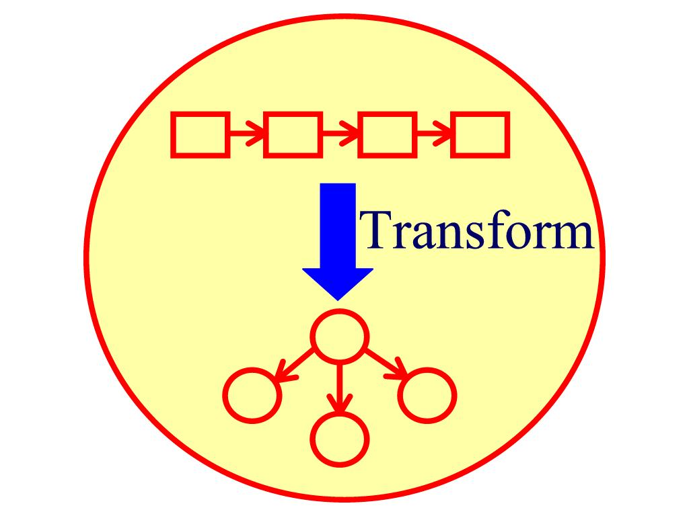

The motivation behind most of my research is the need for reliable
software. Software is rapidly becoming the foundation for our entire civil
infrastructure. All activities including transportation,
telecommunications, energy, medicine, and banking rely on the correct
working of software systems. As software becomes more pervasive in our
infrastructure, failures of software can cause more and more damage. Hence
the increasing need for reliable software. Software reliability also has a
significant impact on our economy. Studies estimate that bugs in software
cost businesses worldwide about $175 billion annually. Making software
reliable is one of the most important problems facing computer science
today. Making software reliable is also one of the most challenging
problems, primarily because of the inherent complexity of large software
systems.
My primary research interest is software reliability, which spans the
spectrum from programming languages, through program analysis, to software
engineering. I am interested in all approaches for helping programmers
write and maintain reliable software. I am particularly interested in
developing programming languages with strong type systems and efficient
software model checking techniques to improve software
reliability.
The following are some of my research projects. A list of
my publications appears on another
page.
SafeJava: A Next Generation Safe Programming Language
Programming languages with strong type systems have significant software
engineering benefits. Types can enforce a wide variety of program
invariants at compile time and catch programming errors early in the
software development cycle. Types also serve as documentation that lives
with the code and is checked throughout the evolution of code.
We are developing a new type system for a next generation safe programming
language. Our type system improves software reliability by preventing
several classes of common but potentially serious programming errors. If a
program type checks, the system guarantees at compile time that the program
does not contain any of those errors. We designed our type system in the
context of a Java-like object-oriented language; we call the resulting
language SafeJava.
The SafeJava type system offers significant software engineering
benefits. Specifically, SafeJava provides a statically enforceable way of
specifying object encapsulation and enables local reasoning about program
correctness; it combines effects clauses with encapsulation to enable
modular checking of methods in the presence of subtyping; it statically
prevents data races and deadlocks in multithreaded programs, which are some
of the most difficult programming errors to detect, reproduce, and
eliminate; it enables software upgrades in persistent object stores to be
defined modularly and implemented efficiently; it statically ensures memory
safety in programs that manage their own memory using regions; and it also
statically ensures that real-time threads in real-time programs are not
interrupted for unbounded amounts of time because of garbage collection
pauses. Moreover, SafeJava provides all these benefits in a
unified type system framework, indicating that seemingly different issues
such as encapsulation, multithreading, software upgrades, and memory
management have much in common.
We have implemented several Java programs in SafeJava. Our preliminary
experience suggests that SafeJava is sufficiently expressive to support
common programming patterns, its type checking is fast and scalable, and it
requires little programming overhead. The SafeJava type system thus offers
a promising approach for improving software reliability.
-
A Type System for Preventing Data Races and Deadlocks in the Java Virtual Machine Language
Pratibha Permandla, Michael Roberson, Chandrasekhar Boyapati.
ACM Conference on Languages, Compilers, and Tools for Embedded Systems
(LCTES 2007),
San Diego, California, June 2007.
[ PostScript |
PDF ]
The slides from the conference presentation are also available.
[ PowerPoint ]
-
SafeJava: A Unified Type System for Safe Programming
Chandrasekhar Boyapati.
Ph.D. Thesis, Electrical Engineering and Computer Science, MIT, February 2004.
[ PostScript |
PDF ]
-
Lazy Modular Upgrades in Persistent Object Stores
Chandrasekhar Boyapati, Barbara Liskov, Liuba Shrira, Chuang-Hue Moh, Steven Richman.
ACM Conference on Object-Oriented Programming, Systems, Languages, and Applications
(OOPSLA 2003),
Anaheim, California, October 2003.
[ PostScript |
PDF ]
The slides from the conference presentation are also available.
[ PowerPoint |
PDF ]
-
Safe Runtime Downcasts With Ownership Types
Chandrasekhar Boyapati, Robert Lee, Martin Rinard.
ECOOP International Workshop on Aliasing, Confinement and Ownership
in Object-Oriented Programming
(IWACO 2003),
Darmstadt, Germany, July 2003.
[ PostScript |
PDF ]
-
Ownership Types for Safe Region-Based Memory Management in Real-Time Java
Chandrasekhar Boyapati, Alexandru Salcianu, William Beebee, Martin Rinard.
ACM Conference on Programming Language Design and Implementation
(PLDI 2003),
San Diego, California, June 2003.
[ PostScript |
PDF ]
The slides from the conference presentation are also available.
[ PowerPoint |
PDF ]
-
Ownership Types for Object Encapsulation
Chandrasekhar Boyapati, Barbara Liskov, Liuba Shrira.
ACM Symposium on Principles of Programming Languages
(POPL 2003),
New Orleans, Louisiana, January 2003.
[ PostScript |
PDF ]
The slides from the conference presentation are also available.
[ PowerPoint |
PDF ]
This is an invited paper.
-
Ownership Types for Safe Programming: Preventing Data Races and Deadlocks
Chandrasekhar Boyapati, Robert Lee, Martin Rinard.
ACM Conference on Object-Oriented Programming, Systems, Languages, and Applications
(OOPSLA 2002),
Seattle, Washington, November 2002.
[ PostScript |
PDF ]
The slides from the conference presentation are also available.
[ PowerPoint |
PDF ]
Also here are the slides from my job talk.
[ PowerPoint |
PDF ]
-
A Parameterized Type System for Race-Free Java Programs
Chandrasekhar Boyapati and Martin Rinard.
ACM Conference on Object-Oriented Programming, Systems, Languages, and Applications
(OOPSLA 2001),
Tampa, Florida, October 2001.
[ PostScript |
PDF ]
The slides from the conference presentation are also available.
[ PowerPoint |
PDF ]
Glass Box Software Model Checking
Software model checking is a formal verification technique that
exhaustively tests a program on all possible inputs (sometimes up to a
given size) to handle input nondeterminism and on all possible
nondeterministic schedules to handle scheduling nondeterminism. Software
model checking requires significantly less human effort compared to
traditional formal verification techniques that rely on theorem provers.
However, it is difficult to scale software model checking to check large
programs and complex properties because of the exhaustive nature of the
search and the consequent state space explosion. Handling the state space
explosion problem is thus the central challenge in software model checking
research.
We are working on novel programming language and program analysis
techniques that significantly reduce the state space of a software model
checker. Our approach, that we call the glass box approach to
software model checking, identifies similarities in the state space of a
software model checker and safely prunes away large portions of the state
space. Preliminary results show orders of magnitude improvement over
previous approaches. We believe that our glass box approach can make
software model checking more efficient and scalable, and thus enable
checking of much larger programs and complex program properties than
currently possible.
-
ACM SIGSOFT Impact Paper Award 2012: Systematic Software Testing: The Korat Approach
Chandrasekhar Boyapati, Sarfraz Khurshid, Darko Marinov.
ACM Symposium on Foundations of Software Engineering
(FSE 2012),
Cary, North Carolina, November 2012.
[ PostScript |
PDF ]
The slides from the conference keynote presentation are also available.
[ PowerPoint ]
-
Glass Box Software Model Checking
Michael Roberson.
Ph.D. Thesis, Electrical Engineering and Computer Science, University of Michigan, May 2011.
[ PostScript |
PDF ]
-
Efficient Modular Glass Box Software Model Checking
Michael Roberson and Chandrasekhar Boyapati.
ACM Conference on Object-Oriented Programming, Systems, Languages, and Applications
(OOPSLA 2010),
Reno/Tahoe, Nevada, October 2010.
[ PostScript |
PDF ]
-
Efficient Software Model Checking of Soundness of Type Systems
Michael Roberson, Melanie Harries, Paul Darga, Chandrasekhar Boyapati.
ACM Conference on Object-Oriented Programming, Systems, Languages, and Applications
(OOPSLA 2008),
Nashville, Tennessee, October 2008.
[ PostScript |
PDF ]
The slides from the conference presentation are also available.
[ PowerPoint ]
-
Efficient Software Model Checking of Data Structure Properties
Paul Darga and Chandrasekhar Boyapati.
ACM Conference on Object-Oriented Programming, Systems, Languages, and Applications
(OOPSLA 2006),
Portland, Oregon, October 2006.
[ PostScript |
PDF ]
The slides from the conference presentation are also available.
[ PowerPoint ]
-
Korat: Automated Testing Based on Java Predicates
Chandrasekhar Boyapati, Sarfraz Khurshid, Darko Marinov.
ACM International Symposium on Software Testing and Analysis
(ISSTA 2002),
Rome, Italy, July 2002.
[ PostScript |
PDF ]
The slides from the conference presentation are also available.
[ PowerPoint |
PDF ]
This paper received an ACM SIGSOFT Distinguished Paper Award.
This paper also received an ACM SIGSOFT Impact Paper Award in 2012.
Past Projects
Thor: A Distributed Object-Oriented Database System
Object-oriented databases provide a simple yet powerful programming model
that allows applications to store objects reliably so that they can be used
again later and shared with other applications. For my Master's thesis, I
designed, implemented, and evaluated the performance of a distributed Java
Persistent Store called JPS. JPS is built on top of the Thor
object-oriented database.
JPS provides several advantages over other persistent Java systems. Unlike
most of other persistent Java systems, JPS is distributed and it allows
multiple clients to simultaneously access the object store. JPS is built to
be used over a wide area network and scales well with large databases. JPS
provides a very reliable and highly available storage. JPS also offers
significantly better performance for many important types of
workloads.
More information on the Thor project can be found
here.

Software Upgrades
Long-lived software systems need upgrades to improve implementations, to
correct errors, or even to change interfaces in the face of changing
application requirements. Providing a satisfactory solution for upgrades
in persistent object stores has been a long-standing challenge.
We have developed a novel mechanism for upgrading objects in a persistent
object store. Our mechanism is expressive, supporting a rich set of
upgrades; it is efficient and does not stop application access to
persistent objects while running an upgrade; it avoids storing multiple
copies of the objects; yet it provides good semantics. Our system uses a
variant of ownership types to ensure that the code for upgrading objects
only observes interfaces and invariants that existed at the time it was
written. This enables modular reasoning about the correctness of
upgrades.
We have implemented our approach in the Thor object-oriented database.
Our performance results show that the overhead of our upgrade
infrastructure is low.
-
Lazy Modular Upgrades in Persistent Object Stores
Chandrasekhar Boyapati, Barbara Liskov, Liuba Shrira, Chuang-Hue Moh, Steven Richman.
ACM Conference on Object-Oriented Programming, Systems, Languages, and Applications
(OOPSLA 2003),
Anaheim, California, October 2003.
[ PostScript |
PDF ]
The slides from the conference presentation are also available.
[ PowerPoint |
PDF ]
More information on the software upgrades project can be found
here.
Aspect-Oriented Programming
Aspect-oriented programming (AOP) is a new programming methodology
that enables the modularization of crosscutting concerns. AspectJ is
an extension to Java that supports AOP.
I was a summer intern at Xerox PARC in 1999, where I worked with
Gregor Kiczales on AspectJ. Specifically, I was involved in the
design of language constructs that make it possible to write reusable
aspects as part of aspect libraries. I also built a rudimentary
editor and debugger for AspectJ.
-
Aspect-Oriented Programming
Gregor Kiczales, John Lamping, Cristina Lopes, James Hugunin, Erik Hilsdale, Chandrasekhar Boyapati.
U.S. Patent No. 6,467,086, issued October 2002.
[ HTML ]
More information on AspectJ can be found
here.
Worst Case Efficient Data Structures
An efficient amortized data structure is one that ensures that
the average time per operation spent on processing any sequence of
operations is small. Amortized data structures typically have
non-uniform response times, which makes them unsuitable in many
important contexts, such as real time systems, parallel programs,
persistent data structures, and interactive software. On the other
hand, an efficient worst case data structure guarantees that
every operation will be performed quickly.
The construction of worst case efficient data structures from
amortized ones is a fundamental problem which is also of pragmatic
interest. For my Bachelor's thesis, I solved two different open
problems in data structures: the implementation of priority queues and
the implementation of concatenable double ended queues with heap
order. I eliminated amortization from existing data structures and
proposed new worst case efficient data structures for these problems.
Chandrasekhar Boyapati